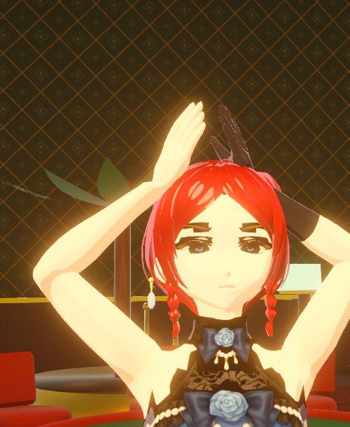
FILE 01 · GUEST
Iris Vance
25. Composed, cold, very hard to read. Long red hair, blue gown, a knife in the garter, and one glove she never takes off.
- Cover
- Off-duty guest
- Status
- Infected
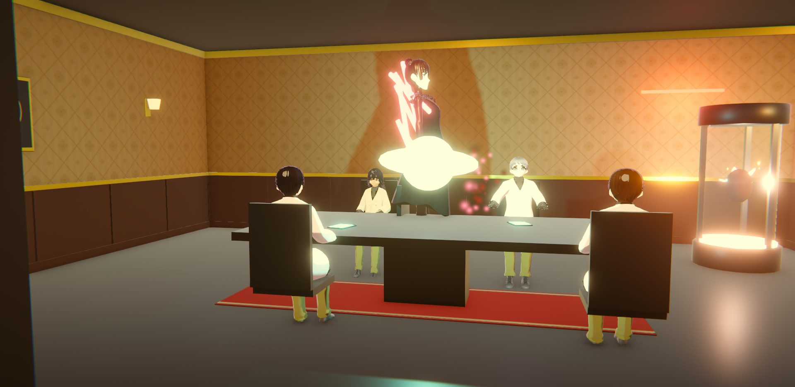
A spy prologue aboard the luxury liner Endeavour. Something boarded with the guests.
Iris Vance came aboard for shore leave. She followed a waiter, looked through a vent, and watched the ship's hostess stop being human. Now the Endeavour is in lockdown, and it is still flying.
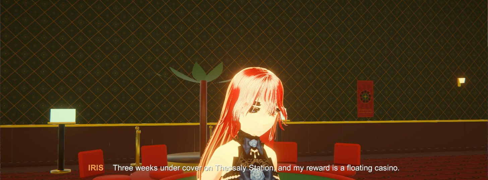
"Three weeks undercover on Thessaly Station, and my reward is a floating casino."
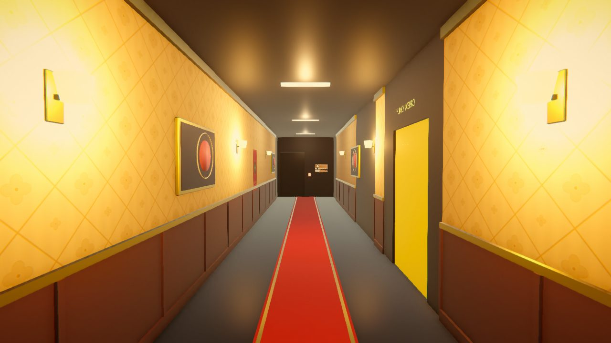
A waiter slips off the service route, down a corridor guests aren't meant to see. Iris follows.
Through the slats: a private board meeting, and the hostess Seren Voss. "Seren...?"
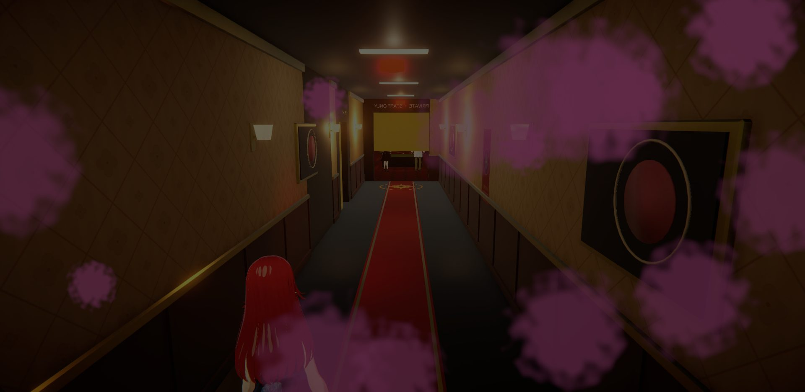
The ship seals itself. Pink spores drift down the corridors. Complimentary drinks will be served.
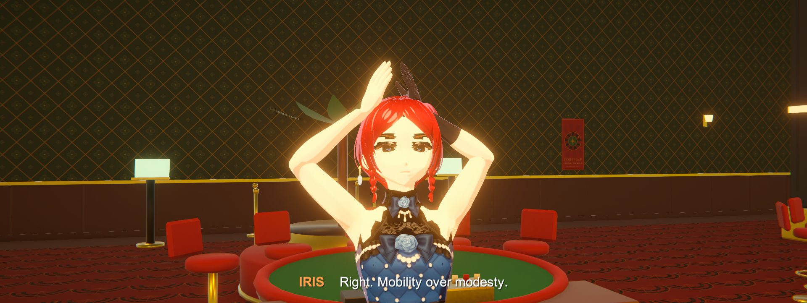
A garter knife, one clean cut through the gown. "Right. Mobility over modesty."
Five files recovered from the ship's guest and crew records. Some entries were sealed before we got to them.

FILE 01 · GUEST
25. Composed, cold, very hard to read. Long red hair, blue gown, a knife in the garter, and one glove she never takes off.
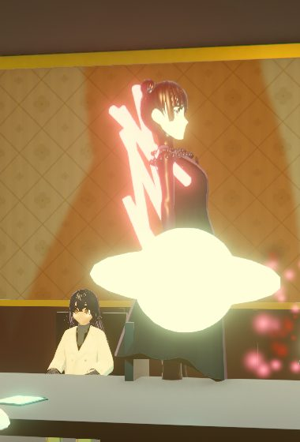
FILE 02 · OWNER
Mid-forties, silver hair, black and gold. Warm and charming on the surface.
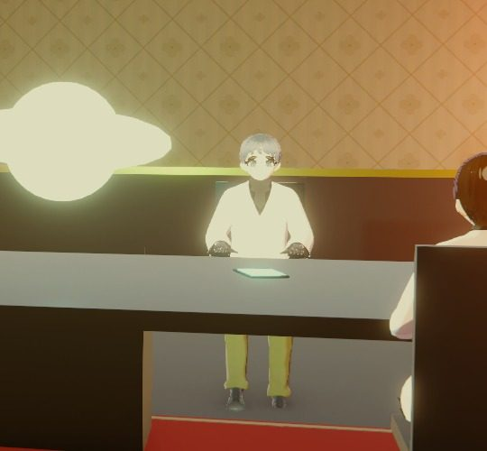
FILE 03 · RESEARCH
Grey beard, glasses, a lab shirt under a formal jacket. Gentle, nervous, knew too much. Last word: "Seren...?"
FILE 04 · ENGINEERING
Ship engineer, soft-spoken. Wears her brother's cracked survey badge and touches it when she's scared.
FILE 05 · GUEST SERVICES
Late twenties, perfect uniform, sharp black bob. A polite smile that never reaches her eyes.
Pick a room on the plan.
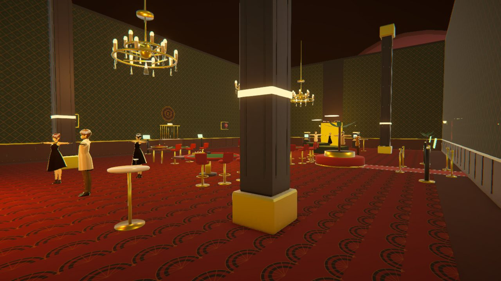
It got into her hand during the kill. Each power glows white-pink across her face while she uses it.
Look at an object and pull it into the air. Throw it at whatever is coming.
Let it out all at once: staggers enemies, reflects shots, breaks weakened walls.
Slow the world around her. It drains Strain, and the room goes quiet and pink.


Key art made with Grok Imagine from in-game references.
Part two
Endeavour is an experiment in how far current AI can be pushed on a real game. GUM directed every decision. Claude wrote the C#, the shaders, the Blender models and rigs, the animations, the textures and the sound. The only hands-on step was shaping the characters in VRoid Studio.
Claude and free tools only. No paid assets, no asset store, no outsourcing.
No hand edits. Every fix goes back through a prompt, even when fixing it by hand would be faster.
Log every failure. Where the AI broke is the real result of the experiment.
Run on a student laptop. Ryzen 3 5300U, integrated graphics, no graphics card.
Characters shaped by hand, exported as VRM.
Headless Blender converts, rigs, models enemies and keys every animation from Python.
Mixamo-named skeletons, so one set of clips drives every human.
Custom toon shader, editor scripts that build and dress each level.
Drag across the frame.
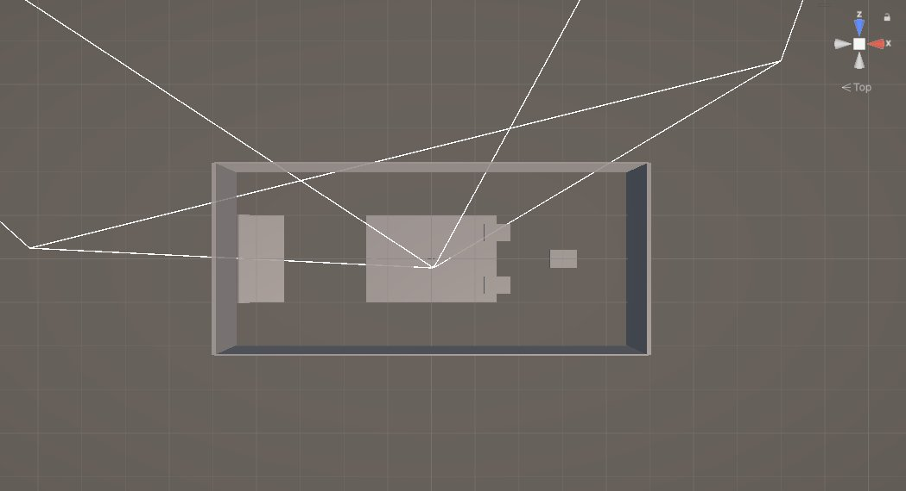
From the build log. Each one cost a session.
The first death animation was a poisoning. The script says she lunges. Rewritten from scratch.
Iris's outfit reset to the gown every frame, so the gear-up cut never showed.
Asking for "Unity" opened a second editor on the same project. Now it always goes through Unity Hub.
Sound files came out of the laptop bridge corrupted, about 5.8 KB too big each. Now they travel as text.
The minimap never appeared: Play mode skipped the scene reload it waited for.
Grok clips drifted mid-shot: a second glove, a lost hair bun, a man laughing at his own death.
The laptop slept. Four scheduled runs wrote code that nobody could test until morning.
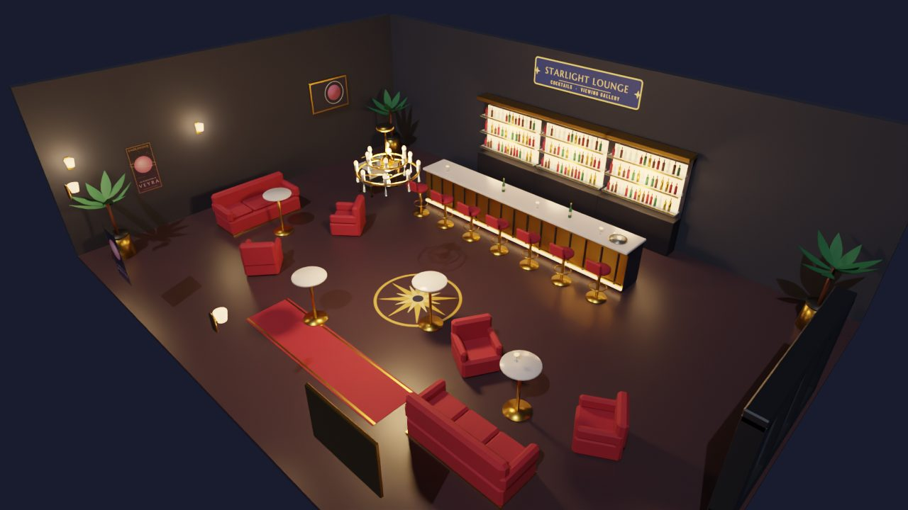
Follow the build log for the next deck, the boss rooms, and every new thing that breaks.
Read the build log